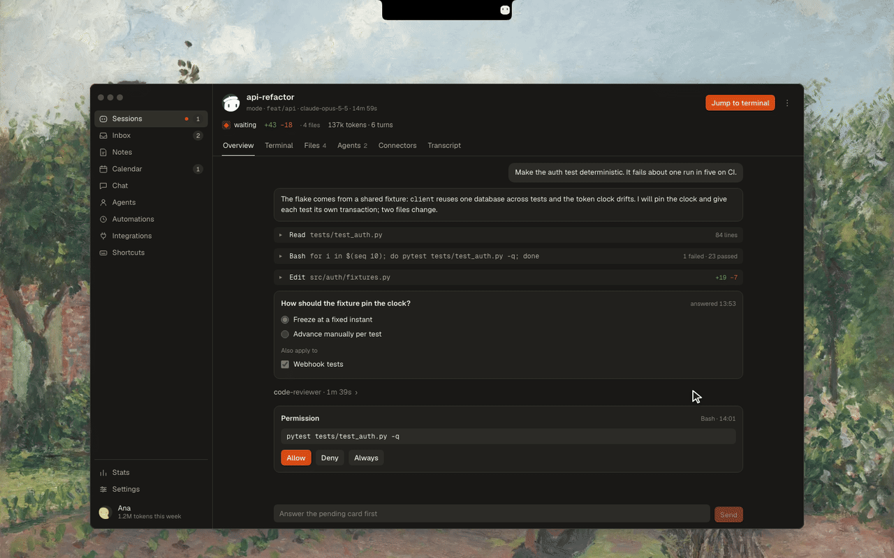
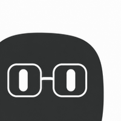
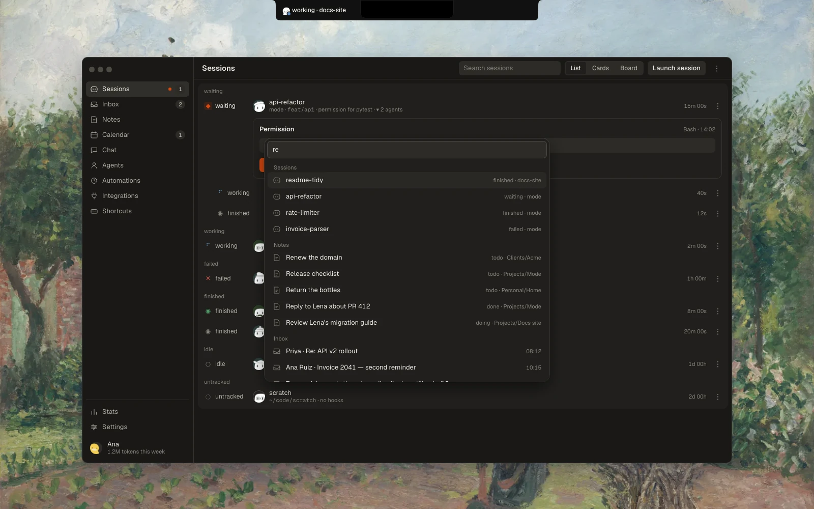
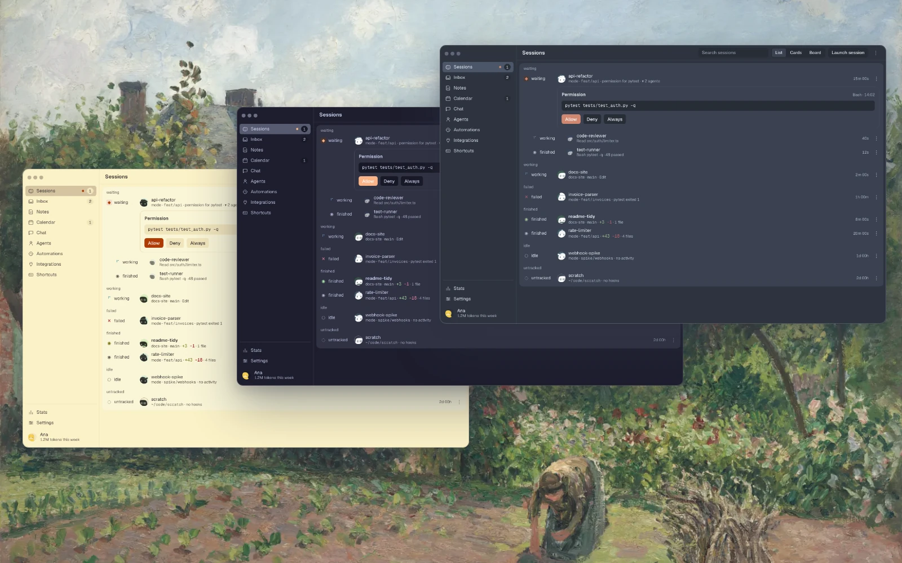

Answer from the pill
A session asks for permission, another asks a question. The pill shows the one that needs you; Allow and the choice answer them there, and each terminal continues as if you had typed. The panel below is one hover away.
AlphaA desktop command center for coding agentsmacOS 15+Windows 11+
Every agent session, your notes, Gmail, Slack and the calendar: one pill in the notch, one window behind it.
curl -fsSL https://raw.githubusercontent.com/gil10101/mode/main/scripts/install.sh | sh

A session asks for permission, another asks a question. The pill shows the one that needs you; Allow and the choice answer them there, and each terminal continues as if you had typed. The panel below is one hover away.
Claude Code and the other agents through their hooks, Gmail, Slack and Calendar through your own accounts, the terminal you already run, and any provider with your key or your endpoint.
Notes as files, one SQLite index, keys in the OS keyring, a bounded message cache. No account, no server, no telemetry.
The query bar turns a sentence into chips you can edit and floating cards you can refine. Underneath, the notes stay markdown files.
Direct messages and the senders you mark come first, then a score you can check on every row. Only the subject and the first 500 characters leave the machine, or nothing on local-only.
A schedule word, then a time. Each run starts a session as an agent, creates a note or asks Chat, and is kept with what it did.
Every event, the permission a session waits on, the files it changed, the subagents it spawned, through the agent's own hooks. Allow from the notch, resume from the roster.
A session in your own terminal shows the app it runs in, and one click brings that window to the front, down to the tab where the app allows it.
Read-only scopes, several accounts of each. Triage in Mode, reply in the source. The next event's join link, whichever service it is on.
Your key or your endpoint, never Mode's. A route per feature with backups, so scoring can run on a small model and Chat on a large one. Ollama and LM Studio keep every prompt on your machine.
The MCP servers, rules and plugins a session reached, each with its mark and whether Mode allowed it, on the session's Connectors tab.
Sessions in your terminal and sessions Mode starts, in one list, sorted by what needs you first. Sessions from before the hooks still show, from their transcripts.
feat/api · permission for pytest · ▾ 2 agentsRead src/auth/limiter.tsmain · editing guides/migration.mdfeat/invoices · pytest exited 1main · 1 file changedfeat/api · 4 files changedspike/webhooks · no activity
~/code/scratch · no hooks@@ -8,12 +8,25 @@ export class Limiter 8 8 constructor(private opts: Opts) {} 9 - private bucket = new Bucket(60) 9+ private buckets = new Map()10 1011 - async take(): Promise<void> {12 - if (!this.bucket.take())13 - throw new Busy() 11+ async take(key: string) { 12+ const b = this.bucketFor(key) 13+ for (let i = 0; i < 5; i++) { 14+ if (b.take()) return 15+ await sleep(jitter(2 ** i)) 16+ } 17+ throw new Busy(key)14 18 }
@@ -0,0 +1,14 @@ 1+export class Bucket { 2+ private tokens: number 3+ private last = Date.now() 4+ 5+ constructor(private rate = 60) { 6+ this.tokens = rate 7+ } 8+ 9+ take(): boolean { 10+ this.refill() 11+ if (this.tokens < 1) return false 12+ this.tokens -= 1 13+ return true 14+ }
@@ -21,9 +21,9 @@ def test_burst(limiter):21 21 for _ in range(60):22 - limiter.take() 22+ limiter.take("client-a")23 - with pytest.raises(Busy):24 - limiter.take() 23+ limiter.take("client-b") 24+ with pytest.raises(Busy): 25+ limiter.take("client-a")25 26@@ -40,4 +40,4 @@ def test_backoff(clock):40 - assert clock.slept == [1, 2, 4]41 - assert calls == 342 - assert not limiter.busy 40+ assert clock.slept == [1, 2, 4, 8, 16] 41+ assert calls == 5 42+ assert limiter.busy("client-a")
@@ -52,6 +52,4 @@ ## Rate limits52 52 Each client key gets 60 requests53 53 a minute.54 - A busy limiter fails at once;55 - clients are expected to retry56 - on their own. 54+ Mode retries 5 times, backing off.57 55
~/code/mode feat/api ❯ git diff --stat docs/api.md | 4 +--- src/auth/bucket.ts | 14 ++++++++++++++ src/auth/limiter.ts | 31 ++++++++++++++++++++++--------- tests/test_limiter.py | 12 ++++++------ 4 files changed, 43 insertions(+), 18 deletions(-) ~/code/mode feat/api ❯ pytest tests/test_limiter.py -q .... [100%] 4 passed in 2.31s ~/code/mode feat/api ❯ git log --oneline -3 9f2c41e Limiter: one bucket per client key 51ab0d7 Retries back off, five attempts, jittered e07d3a2 Docs: rate limits ~/code/mode feat/api ❯
Grep Session.shared · 40sBash pytest -q · 48 passed · 12sRead src/auth/fixtures.py · 27 linesRead src/auth/clock.py · 12 linesRead src/auth/__init__.py · 58 linesRead tests/test_auth.py · 92 linesRead tests/test_webhooks.py · 61 linesBash pytest tests/test_auth.py -q · 24 passedBash pytest tests/test_webhooks.py -q · 24 passedBash ten runs of both suites · 48 passed each48 passed in each of ten runs, 0.9 s per run. No failure and no clock warning; the fixture no longer leaks state between tests.
Markdown files in a folder you choose. Mode indexes them and can rebuild the index any time; the files stay yours.
Lead with what a user notices, then the migration steps from guides/migration.md. Under 120 words.
Tone: the last two notes in CHANGELOG.md.
Lead with what a user notices, then the migration steps from guides/migration.md. Under 120 words.
Tone: the last two notes in CHANGELOG.md.
What has to be true before the flag flips for everyone.
Flip v2_api in config/flags.yml last.
Every account in one list. Direct messages and the senders you mark first, the rest scored with a one-line why. Read-only scopes; Mode never sends.
v2_api in config/flags.yml; default off, so nothing changes for customers until we flip it.An agent is a reusable way of working: model and effort, backup models, instructions and memories, tools and rules. An automation starts a session as one on a schedule.

Ask about your notes, sessions, messages and calendar. Every answer cites the note or thread it came from; an action waits for your confirm.

Tokens, sessions and files this week; a year of activity like a contribution graph; the breakdown by model, agent and day.

Every view, session, note, message and action a few letters away.

System and Paper built in; Gruvbox, Nord and Catppuccin as packs; any pack you write as JSON with tokens only. Both surfaces change together.